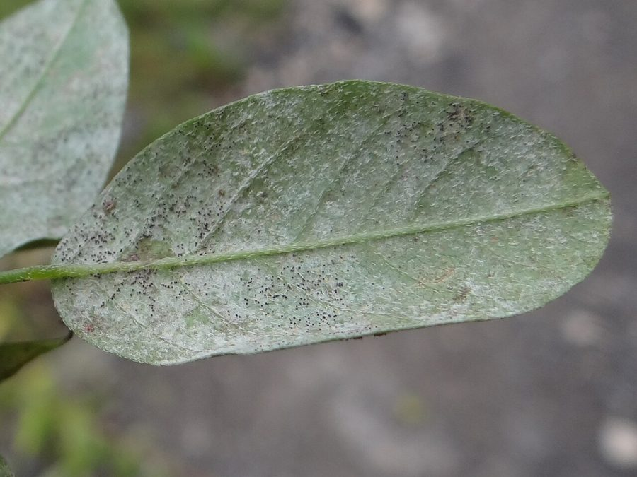

मटर की चूर्णिल आसिताPowdery Mildew of Pea
Erysiphe pisi · Erysiphaceae · FNG-0025

- Scientific name वैज्ञानिक नाम
- Erysiphe pisi Sydow
- Family कुल
- Erysiphaceae
- Hindi हिंदी
- मटर की चूर्णिल आसिता
- Local names स्थानीय नाम
- matar ki churnil asita, churnil asita, powdery mildew, pea mildew
- Status here यहाँ की स्थिति
- native
- Movement आवागमन
- Resident, here all year
- IUCN IUCN
- not evaluated
- Review समीक्षा
- audited and independently read
When to look कब देखें
Expected mainly in January, February, March. मुख्यतः जनवरी, फ़रवरी, मार्च में अपेक्षित।
मटर की चूर्णिल आसिता / Powdery Mildew of Pea
Erysiphe pisi Sydow — Erysiphaceae
मटर की चूर्णिल आसिता — मटर की फसल पर सफेद चूर्ण जैसा कोटिंग जो पत्तियों को ढक देता है। जनवरी-मार्च में गर्म दिन, ठंडी रात — यह बीमारी फूट पड़ती है। पत्तियों पर सफेद पाउडर, पत्ती पीली हो जाती है, गिर जाती है। पौधा कमजोर हो जाता है, फली का आकार छोटा हो जाता है। छिड़काव से ठीक हो जाता है। पूर्वी उत्तर प्रदेश में हर मटर के खेत में यह समस्या है।
Quick Identification त्वरित पहचान
| Feature | Description |
|---|---|
| Leaf coating | White, powdery coating on both leaf surfaces; wipes off easily |
| Distribution | Starts on older lower leaves; spreads upward |
| Leaf response | Affected leaves yellow and may drop |
| Pod infection | White coating on pods; pods may be deformed |
| Progression | Spreads rapidly in warm, dry, poorly-ventilated canopy |
| Season | Most visible in late crop (February–March) |
Field tip: Powdery mildew on pea is identified by white powdery coating on leaves in late February and March. The coating is uniform and completely covers affected leaf area. Leaves become pale, yellow, and papery. In contrast to many fungal diseases, the white powder can be rubbed off easily to reveal the pale green leaf beneath. Any pea field with visible white powder on leaves in February–March likely has powdery mildew.
हिंदी — कैसे पहचानें: सफेद चूर्ण, पत्तियों पर। रगड़ने से उतर जाता है। पुरानी पत्तियों से शुरू होता है।
Morphology and Symptomatology आकृति और लक्षण
Fungal structures (visible with microscope):
| Structure | Appearance |
|---|---|
| Mycelium | Surface-growing (ectoparasitic); white, thread-like; forms network on leaf surface |
| Conidiophore | Erect, unbranched or sparsely branched; emerges from mycelium |
| Conidium (spore) | Oval or elliptical; 25–40 × 12–20 µm; hyaline (clear); chains of spores form on conidiophores; easily dispersed by wind |
| Cleistothecium | Dark fruiting structure (1–2 mm diameter); forms late in season; contains ascospores; overwinters in plant debris |
| Appendages | Cleistothecia bear appendages (thread-like structures) with specific morphology that aids species identification |
Disease progression:
- Infection source: Overwintering cleistothecia in crop residue; conidia from surrounding infected plants
- Spore dispersal: Conidia easily airborne; wind-borne spores land on pea leaves; no water film required for infection (unlike many fungal pathogens)
- Infection process: Spores germinate on dry leaf surface; germ tube penetrates leaf epicuticle; haustoria (feeding structures) enter epidermal cells
- Colonization: Mycelium spreads across leaf surface; does not penetrate deeply into leaf tissue
- Symptom appearance: 5–7 days after infection; white powdery coating appears on leaf surface
- Sporulation: Spores produced continuously throughout infection; conidia released in clouds; secondary spread rapid
Symptom development:
- Early stage: Scattered white spots on older leaves (January–early February)
- Advanced stage: Extensive white coating on multiple leaves; older leaves yellow and drop; plant appears defoliated
- Late season: Cleistothecia form (tiny dark balls visible within white coating); crop productivity severely reduced
Life Cycle / Phenology जीवन चक्र
In eastern UP (pea crop: October–March; disease peak February–March):
| Stage / Month | Event |
|---|---|
| March–May | Previous pea crop harvested; infected residue left in field; cleistothecia form on dead leaves in early summer |
| June–September | Cleistothecia overwinter in dry crop residue; remain viable; spores inside remain dormant |
| October–November | New pea crop sown; seedlings establish; weather still warm; no disease symptoms |
| December–January | Crop grows; warm days, cool mornings become established; conditions becoming favorable for mildew |
| February | DISEASE ONSET — Temperature 15–25°C, low humidity at dawn (dew formation); conditions optimal for conidial germination; first symptoms appear on lower, older leaves |
| February–March | ACTIVE DISEASE PERIOD — Warm days, cool nights, high daytime temperatures favor rapid sporulation; conidia dispersed continuously; secondary spread rapid; mycelium spreads upward on plant |
| Late March | Crop matures; if mildew is severe, pods are small and filled poorly; grain yield reduced; cleistothecia form on infected tissue |
| April–May | Harvest; infected residue left in field; cleistothecia become the primary overwintering inoculum |
Seasonality note: Powdery mildew is most severe in February–March when daytime temperatures reach 18–25°C and nights are cool (10–15°C). Drought stress on plants increases susceptibility. Rainfall and high humidity actually reduce disease (spores cannot germinate in wet conditions).
हिंदी — जीवन चक्र: सर्दी में गर्म दिन, ठंडी रात होने पर फूट पड़ता है। फरवरी-मार्च में सबसे ज़्यादा नुकसान। पुरानी पत्तियों पर पहले आता है।
Ecology and Substrate पारिस्थितिकी और आधार
Obligate ectoparasitic pathogen: Erysiphe pisi is an obligate plant pathogen that feeds from the leaf surface; mycelium does not penetrate deeply into leaf tissue.
Temperature and humidity requirements:
- Optimal growth: 15–25°C, dry conditions at leaf surface; high relative humidity (but not liquid water)
- Conidial germination: No free water required (unusual among fungi); germinates on dry leaf surface at 10–25°C
- Rapid sporulation: Occurs at 18–25°C with cool nights and warm days
- Stress to fungus: Rainfall, leaf wetness, >25°C continuous high temperature slow growth; spores cannot germinate if leaf is wet
- Survival: Cleistothecia survive in dry crop residue for 6–12 months; spores inside remain viable
Host specificity: Primarily affects garden pea (Pisum sativum); can occasionally infect broad bean (Vicia faba) and related legumes; highly specific to Pisum.
Transmission:
- Primary (overwintering cleistothecia): Cleistothecia in crop residue are the major overwintering source
- Secondary (aerial conidia): Once disease appears in the field, conidia spread rapidly by wind; no rain-splash dispersal required
- Inoculum pressure: Adjacent fields with infected pea plants are a secondary source of conidia
Agricultural / Human Relevance कृषि प्रासंगिकता
Economic impact:
- Yield loss: 15–50% depending on disease severity and crop stage of infection; early infection causes greater losses
- Grain size reduction: Infected pods produce smaller, lighter grains; market value reduced
- Fodder loss: Infected leaves drop; green fodder value and nutritional content reduced
- India context: Powdery mildew is endemic in pea-growing regions; annual losses in Uttar Pradesh run into several crores
Management — in order of priority:
- Resistant varieties (MOST EFFECTIVE):
- Recommended in Uttar Pradesh: Azad P-1, HUDP-15, VRP-1 (all have high resistance)
- Susceptible varieties to avoid: Bonneville, Kent, Jawahar Pea-1
- Varietal rotation: Change variety every 2–3 years to prevent pathogen adaptation
- Cultural practices:
- Field sanitation: Remove infected crop residue from previous crop; burn or bury; do not use for mulch or fodder
- Spacing and ventilation: Adequate spacing reduces humidity within crop; facilitates air circulation and drying of leaf surface
- Irrigation timing: Avoid overhead irrigation in evening; irrigate in early morning; allows canopy to dry quickly
- Weed management: Remove weeds that may harbor alternate hosts or reduce air flow
- Chemical and biological treatment (supplementary):
- Fungicide spray (if disease appears): Sulphur (3 g/L, preferably wettable sulphur) or Karathane (1 mL/L) sprayed weekly starting February; requires 2–3 sprays
- Biological control: Trichoderma sp. (bioagent) applied to field has limited field evidence; not widely recommended in eastern UP
- Neem oil spray: Neem oil (3%) sprayed on affected leaves provides partial control
- Integrated approach for farmers:
- Primary control: Plant resistant variety
- Field sanitation: Remove previous crop residue completely
- Monitoring: Starting February, inspect lower leaves weekly; if white coating appears on >5% of plant area, spray fungicide
- Spacing and ventilation: Maintain adequate plant density; avoid overcrowding
Government support:
- State extension departments and KVKs promote resistant varieties
- Fungicide recommendations and subsidies provided in some years
हिंदी — रोकथाम: प्रतिरोधी किस्म बोओ। पिछली फसल की पत्तियाँ निकाल दो। फरवरी में पत्तियों को देखो, सफेद चूर्ण दिखे तो गंधक का छिड़काव करो।
Expected Locally स्थानीय रूप से अपेक्षित
Not a field record. Written from published accounts for eastern Uttar Pradesh. No confirmed local sighting yet — if you have seen it, that is what the atlas needs.
अभी तक स्थानीय पुष्टि नहीं। यह विवरण प्रकाशित स्रोतों से है, किसी अवलोकन से नहीं।
Powdery mildew is expected in Basti and Ayodhya districts wherever pea is cultivated, particularly in rabi season fields from February to March. Disease incidence varies with:
- Variety grown (susceptible varieties show 40–60% leaf area infection; resistant varieties show <5%)
- Crop residue management (fields with poor sanitation show earlier, more severe disease)
- Weather (warm February–March with cool nights and low rainfall favor disease; heavy rain suppresses disease)
In typical years with warm late-season weather, disease severity in susceptible varieties reaches epidemic levels by March.
Distribution वितरण
Global range: Pea-growing regions worldwide; particularly severe in temperate regions with cool winters and warm, dry springs (South Asia, Europe, North America).
In India: Endemic in all pea-growing regions; particularly severe in Uttar Pradesh, Madhya Pradesh, Himachal Pradesh and parts of the Deccan.
In Uttar Pradesh: Common in all pea-growing districts; eastern UP (Basti, Gorakhpur) experiences significant disease pressure.
In Basti district / eastern UP: Expected in pea fields from January to March, particularly in fields using susceptible varieties or with poor crop residue management.
Research Questions शोध प्रश्न
- Which pea varieties are grown in Basti district, and which show the highest disease severity in typical February–March conditions? — Survey 15 farmers; rate disease on 0–5 scale.
- Does removal of infected crop residue from the previous season reduce disease incidence in the current season? — Compare two fields (one with residue removal, one without); measure disease over season.
- What is the cost-benefit of fungicide sprays for powdery mildew control in pea? — Trial comparing sprayed plots, resistant variety, and untreated control.
- At what disease severity (% leaf area covered) does grain yield begin to decline significantly? — Measure disease severity and yield in replicated plots with varying disease levels.
- Can cleistothecia be detected in crop residue using a simple field technique, and does this correlate with disease incidence in the next season? — Soil sampling and residue inspection.
Similar Species मिलती-जुलती प्रजातियाँ
| Disease | How to tell apart | हिंदी |
|---|---|---|
| Downy Mildew (Peronospora spp.) | White/grey coating on leaf underside only; leaves curl; requires wet conditions | नीचे की ओर धूसर, पानी चाहिए |
| Alternaria/Leaf Spot | Brown or grey spots (not white powder); spots have dark margin and concentric rings | भूरे दाग़, गोल |
| Septoria Leaf Spot | Grey spots with black border; smaller lesions (not white coating) | छोटे धूसर दाग़ |
Field rule: White powdery coating on pea leaves in February–March that rubs off easily to reveal pale leaf beneath = powdery mildew. Any other colour (brown, grey) or spot pattern = different disease.
Taxonomy & Classification वर्गीकरण
Original description. Erysiphe pisi was described by Sydow and Sydow in the early 1900s as a cause of pea powdery mildew. The species name pisi indicates the primary host (Pisum sativum).
Subspecies. No subspecies are formally recognized.
Family and order placement. Order Erysiphales, family Erysiphaceae (powdery mildews). This is one of the most speciose fungal families, with hundreds of species parasitic on higher plants.
Phylogenetic notes. Erysiphe pisi is distinct from other Erysiphe species by host specificity and cleistothecial appendage morphology.
IUCN status rationale. Not evaluated. As an obligate plant pathogen, conservation status is not applicable. Its management is an agricultural priority.
Photo Gallery फोटो गैलरी
Photos needed आवश्यक फोटो
- [ ] Pea leaf with white powdery coating (पत्ती पर सफेद चूर्ण)
- [ ] Close-up of conidial chains (माइक्रोस्कोप)
- [ ] Infected pod (फली)
- [ ] Comparison of healthy and diseased leaves (तुलना)
No photos yet — add field photos to media/species/pea_powdery_mildew/ and run node scripts/sync_photos.js.
References संदर्भ
- Sydow, H. & Sydow, P. (1902). Die Erysipheen (Powdery Mildews). Wilhelm Engelmann, Leipzig. [original description context]
- Tewari, J.P. & Skoropad, W.P. (1976). Erysiphe pisi — life history and epidemiology. Mycologia 68: 1065–1079.
- Indian Council of Agricultural Research (2008). Management of Pea Diseases. ICAR, New Delhi.
- Singh, R.P. & Srivastava, K.M. (2014). Powdery mildew of pea: disease monitoring and fungicide efficacy. Indian Phytopathology 67(2): 156–163.
- Choudhary, M.L. et al. (2010). Status and management of pea diseases in eastern Uttar Pradesh. Journal of Integrated Plant Biology 2(3): 187–198.
- GBIF Occurrence Data — Erysiphe pisi, India (2026).
Source file: species/fungi/molds/pea_powdery_mildew.md